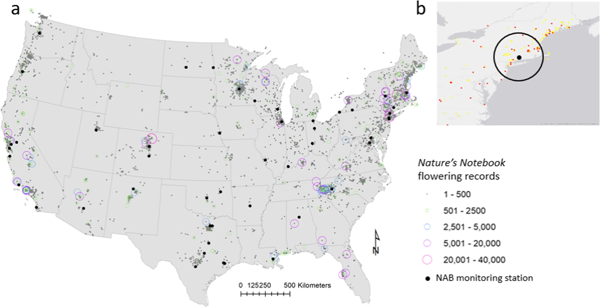
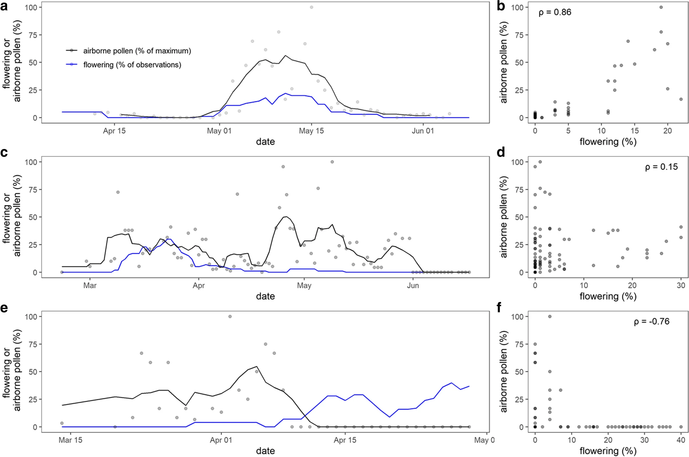

Flower and pollen status records contributed to Nature’s Notebook in continental US and National Allergy Bureau (NAB) certified pollen monitoring stations.

Three examples of comparing flowering status observations and airborne pollen concentrations.